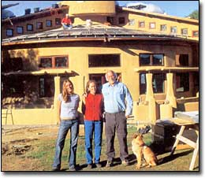

By Steve Gresham
John Schaeffer, shown left with his wife, Nancy, center, and daughter, Sara, is the founder of Real Goods, a solar retail business that has helped outfit more than 50,000 homes with solar power. The 12-acre Real Goods Solar Living Center in Hopland, California, hosts nearly 200,000 visitors each year. Schaeffer also founded the Solar Living Institute, an environmental education nonprofit. He has experimented with and taught about state-of-the-art green building and renewable energy systems throughout his career.